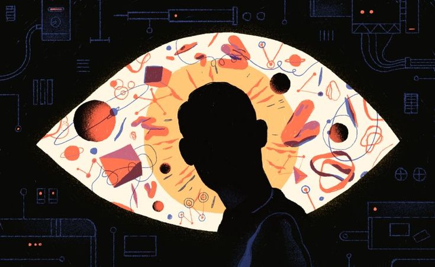
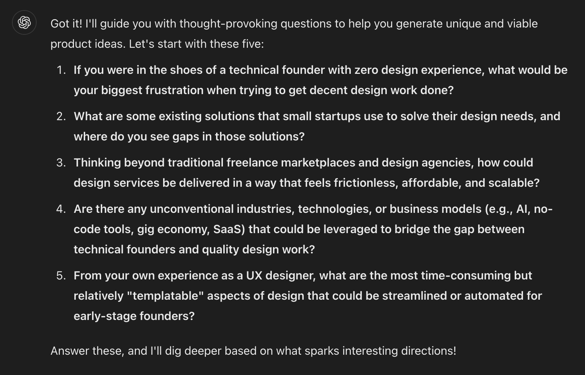
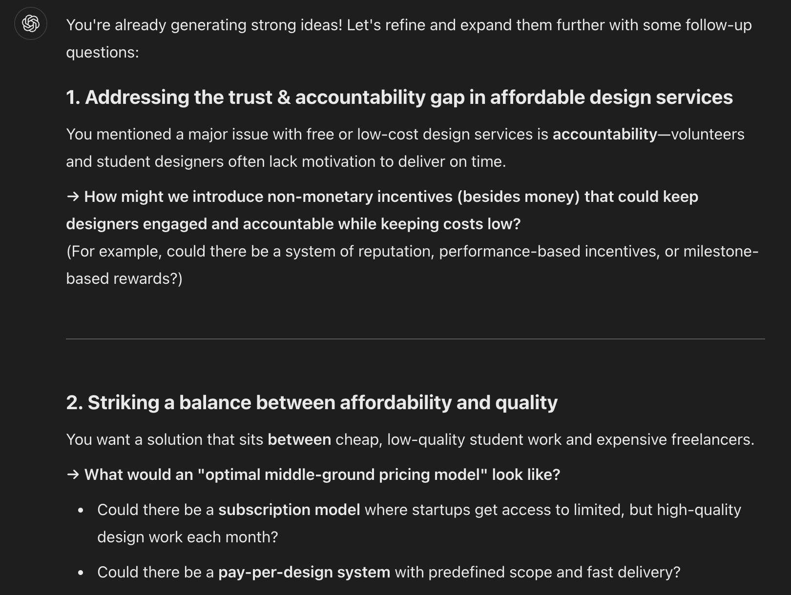
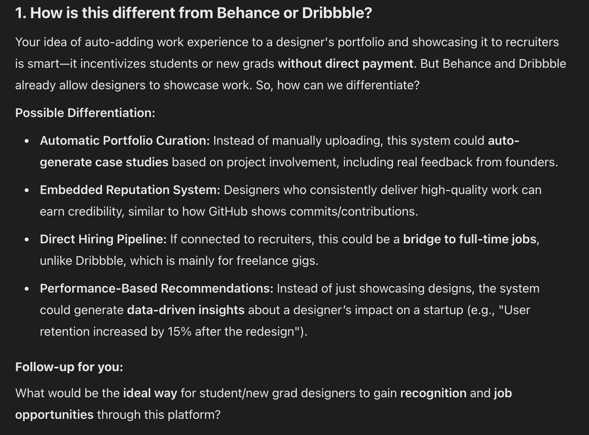
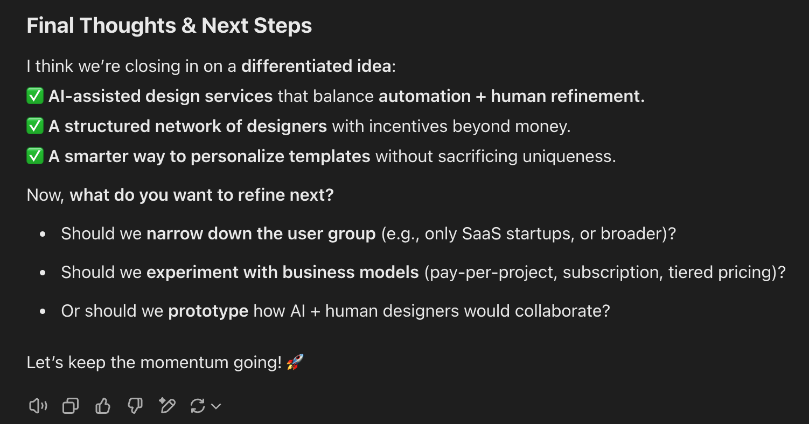

Human can’t be replaced
After experimenting with different collaborative roles for LLMs, my confidence in human creativity has only grown stronger. While Artificial Intelligence might be exceptionally good at synthesizing information and generating small, creative ideas, it still struggles to produce truly unique business concepts with real commercial potential.
However, LLMs are excellent prompters–they are the perfect guide for brainstorming, pushing us to explore ideas more deeply and venture further down the rabbit hole.

LLMs as prompters
This time, rather than directly asking LLM to generate ideas, I switched our roles and told it to become my prompter by asking thought-proviking questions. With base prompt the same, I added the following:
I want you to do the following: ask me 5 questions that you think might be inspiring in this field and have the potential to expand my thoughts. Based on my answers, you can ask follow-up questions if needed. The questions can be about the context, my personal experience, creative process, interdisciplinary fields, or any aspects that you think might help with the idea generation in the context I provided above.
Initially, GPT started with some generic questions, following a typical brainstorming procedure. From top to bottom, each question digs deeper and asks something more specific and tangible. One interesting point worth mentioning is the word templatable in the fifth question. It precisely captures the essence of the context I provided, even though I never used it in my original prompt. I was impressed by how well the LLM understood and summarized my content, and inferred something implicit from our conversation.

After I answered the five questions, GPT provided additional feedback by highlighting key points from my responses and posing follow-up questions. Unlike the previous experiment, where GPT took the dominant role in ideation, this time I contributed more information infused with human perspectives and loosely structured ideas. Rather than generating a flood of generic “AI-powered platform” concepts, GPT followed my train of thought, engaging in a more nuanced dialogue and addressing specific questions I had raised in my previous response.

I gave very positive feedback about the questions it prompted me. But this time, I asked it to not only ask me follow-up questions, but also respond to some of the questions I have left in my response and think together with me.
This time, each bullet point header was framed as a question. Below each question, GPT provided insightful responses, followed by several follow-up questions for me to consider. In the end, without being prompted, GPT offered a summary of final thoughts along with potential next steps.


What is the game changer
I was very satisfied with the result this time. Although we haven’t reached an ideal outcome yet, the human-machine collaboration took a promising direction. This made me reflect—what was the game changer?
Large Language Models integrate vast amounts of data from the internet, which means their outputs tend to be the most average—the statistically most probable responses. However, the most probable idea isn’t necessarily the most feasible, let alone the most creative. This is where human thought and contribution become essential. Unlike AI, our thinking process isn’t constrained by “word embeddings.” Some seemingly unrelated ideas—those that don’t follow predictable patterns—are often the ones that lead to true breakthroughs.
So, how exactly can AI support us in this space? As the saying goes, two minds are better than one. By leveraging AI’s ability to expand on concrete ideas and provide tangible solutions, it helps counteract biases and blind spots in human thinking. By flexibly combining the strengths of both human creativity and AI’s analytical capabilities, I found a more natural and effective approach to human-machine collaboration.
In the next post, I’ll be exploring LLMs’ strengths and weaknesses as idea refiner.